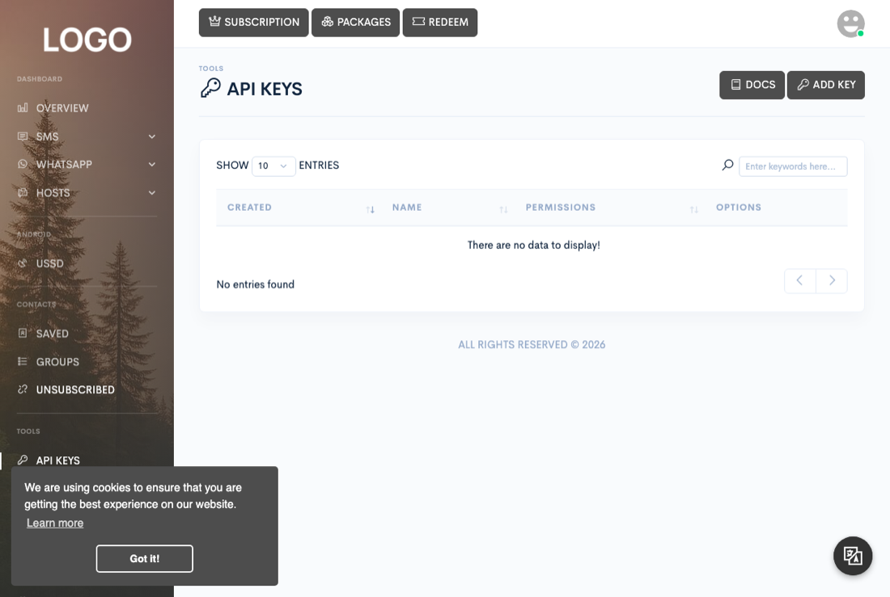
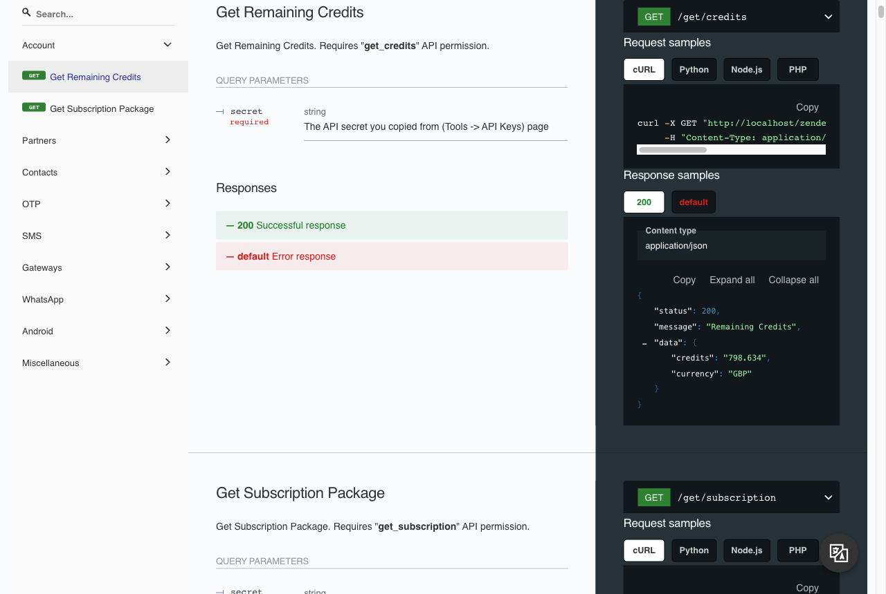

Automation & API
REST API
Integrate Zender into your own software: send SMS and WhatsApp, check message status, and read back your subscription's usage from outside the dashboard.


Every example below uses yourdomain.com as a placeholder for your own
site domain — prefixed with whichever scheme (http or https)
your site actually runs under — and zk_9f2a...c81b as a placeholder API
secret; replace both before running anything. The dashboard also renders this same
reference interactively under Docs → API, served from a locally
vendored copy of Redoc rather than a CDN, so it works even without internet access.
Getting your API key
From Tools → API Keys (visible when your subscription includes the API), Add API key takes a name and a multi-select list of permissions — every endpoint below is gated on one, and a key with none checked is rejected at creation. The secret itself is a 40-character random string generated for you, and is never shown in the table as plain text — click the copy button on the key's row to copy it to your clipboard. How many keys you're allowed depends on your subscription's key limit.
Authentication
There's no Authorization header. Every call takes your secret as a
request parameter named secret — so it works equally as a query string
parameter on a GET or a form field on a POST. A missing or unrecognized secret gets a
400 or 401 before your call reaches any endpoint logic.
Endpoints are grouped under six URL prefixes: /api/send/{service},
/api/get/{service}, /api/create/{service},
/api/delete/{service}, /api/validate/{service}, and
/api/remote/{service}. This page covers the ones named in its headings;
the interactive reference under Docs → API covers the rest (contacts,
groups, devices, WhatsApp account management, scheduled-campaign start/stop, and
more).
Zender's API responses are always transport-level HTTP 200,
regardless of whether the call succeeded. curl -i against any endpoint
below, including a rejected one, shows HTTP/1.1 200 OK. You must branch
on the JSON body's status field, not the HTTP status line:
{"status": 403, "message": "This API key doesn't have permission to use this endpoint!", "data": false}Sending SMS
POST /api/send/sms — requires the sms_send permission and
the sms subscription service. mode is either
devices (send from one of your Android gateway devices — needs
device, and optionally sim: 1 or 2)
or credits (send through a gateway or a shared device, deducted from your
balance — needs gateway, either a gateway ID or a global device ID).
message must clear the site's minimum length; an optional
shortener ID link-shortens any URLs in the message first.
curl -X POST "yourdomain.com/api/send/sms" \
-d "secret=zk_9f2a...c81b" \
-d "mode=devices" \
-d "phone=+15551234567" \
-d "device=00000000-0000-0000-d57d-f30cb6a89289" \
-d "sim=1" \
-d "priority=2" \
-d "message=Hello from the API!"Success: {"status":200,"message":"Message has been queued for sending!","data":{"messageId":123}}.
POST /api/send/sms.bulk (permission sms_send_bulk) is the
same idea for many recipients at once: instead of phone it takes
campaign (a name for the send) plus numbers (comma-separated
phone numbers) and/or groups (comma-separated contact group IDs) — at
least one of the two is required.
Sending WhatsApp
POST /api/send/whatsapp — requires the wa_send permission
and the whatsapp subscription service. Note the recipient parameter is
recipient, not phone. account
is the unique ID of one of your linked WhatsApp accounts (visible from
WhatsApp → Queue in the dashboard, or /api/get/wa.accounts).
recipient is either a phone number or a full …@g.us
group ID, following the same identity contract described on the Webhooks page.
type defaults to text; an unrecognized value is silently
treated as text rather than rejected.
curl -X POST "yourdomain.com/api/send/whatsapp" \
-d "secret=zk_9f2a...c81b" \
-d "account=6f1a9c...unique" \
-d "recipient=+15551234567" \
-d "type=text" \
-d "message=Hello from the API!"Success (default priority, queued rather than sent immediately):
{"status":200,"message":"WhatsApp chat has been queued for sending!","data":{"messageId":456}}.
Pass priority=1 to send immediately instead of queuing (message:
"WhatsApp chat has been sent!").
For type=media, send either a media_url (with
media_type: image, audio, or video)
or a multipart media_file upload (jpg/jpeg/png/gif/mp4/mp3/ogg).
For type=document, send either a document_url (with
document_type: pdf/xml/xls/xlsx/doc/docx,
and optionally document_name) or a multipart document_file
upload.
POST /api/send/whatsapp.bulk (permission wa_send_bulk) takes
account, campaign, message, and
recipients (comma-separated numbers and/or …@g.us IDs)
and/or groups, the same pattern as sms.bulk.
Checking status
GET /api/get/sms.message and GET /api/get/wa.message look up
one message by ID: pass id and type (sent or
received). Looking up a sent message needs get_sms_sent /
get_wa_sent; a received one needs get_sms_received /
get_wa_received — sms.message additionally always requires a
base get_message permission.
curl -G "yourdomain.com/api/get/sms.message" \
-d "secret=zk_9f2a...c81b" \
-d "id=123" \
-d "type=sent"Response data for a sent SMS includes status as one of
queued, pending, sent, or failed
(see the Sending SMS page for what each means), plus sender,
sender_type, recipient, message, and
created (Unix timestamp). A WhatsApp chat's status is one of
pending, queued, sent, or failed,
plus an attachment download link when there was media.
For an account-wide picture rather than one message, GET /api/get/credits
(permission get_credits) returns your remaining credit balance, and
GET /api/get/subscription (permission get_subscription)
returns your whole package as used/limit pairs — e.g.
usage.sms_send, usage.wa_send, usage.apikeys —
which doubles as the definitive way to check how close you are to any of the limits in
the next section.
curl -G "yourdomain.com/api/get/subscription" \
-d "secret=zk_9f2a...c81b"Sending a USSD request
POST /api/send/ussd — requires the ussd permission and
the Android USSD subscription service, and needs a device running Android 8 or
later. Pass device (one of your Android device IDs), sim
(1 or 2), and code (the USSD string to dial,
e.g. a balance-check code from your carrier). The request is queued against the
device, not answered inline — the device's response comes back asynchronously as a
ussd webhook event (see the Webhooks page), so set one up before you
rely on this.
GET /api/get/ussd (permission get_ussd) lists your past
requests and their status (pending, queued, or
completed), each with its device, SIM, code, and response once one has
come back. DELETE /api/delete/ussd (permission delete_ussd)
removes a request record.
Remote administration (SaaS API)
Separate from the per-account API keys above, Zender has a second, admin-level API for platforms that want to provision or manage the installation itself from their own software rather than through the dashboard — creating users, granting packages, generating vouchers, and so on, without a human clicking through Admin.
It's authenticated with its own Admin API token, separate from both your regular API key secrets and the site's system token, and it's off by default. A super admin turns it on and chooses exactly which actions are allowed — get/create/edit/delete for users, roles, packages, vouchers, subscriptions, transactions, languages, and API keys — from the Settings screen under Admin → Overview (see the System settings page), where the token itself can also be regenerated. Anything not explicitly enabled there is rejected, even with a valid token.
Rate limits and errors
There's no per-request throttle — what looks like a rate limit is really your
subscription package's usage quota. Each send-type endpoint checks
your usage against counters like send_limit / wa_send_limit;
a limit of 0 or less means unlimited. Once you hit it, sends fail
with:
{"status":403,"message":"Maximum allowed number of sent messages has been reached!","data":false}Quotas reset on whichever cadence your package uses (daily or monthly — see the Cron
jobs page's note on the quota job) rather than on a rolling window, so
there's no "retry after N seconds" — check /api/get/subscription to see
when you're close.
| Status | Meaning |
|---|---|
200 | Success. |
400 | Missing/invalid parameters — e.g. an unparsable phone number, a message shorter than the site minimum, or an unrecognized media type. |
401 | The secret doesn't match any API
key. |
403 | Recognized secret, but not allowed to do this — a missing permission on the key itself, a subscription that doesn't include the service, or a quota/limit reached. |
404 | A referenced device, gateway, WhatsApp account, or message ID doesn't belong to this key's account. |
500 | Something failed on Zender's or a downstream service's side — a disconnected WhatsApp server, a gateway that rejected the send, etc. Usually safe to retry later; not a problem with your request shape. |
If the site has AI moderation turned on (from the Settings screen under
Admin → Overview), every SMS and WhatsApp text send is screened before
it's queued; flagged content is rejected with 400 and logged to
Tools → Logger rather than being sent.